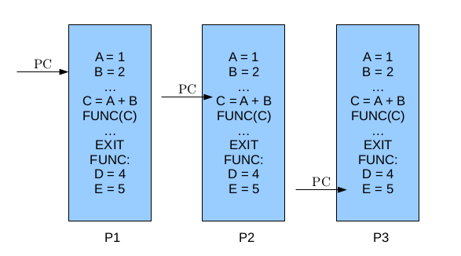
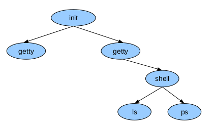
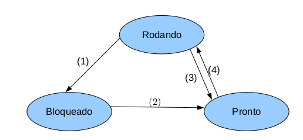
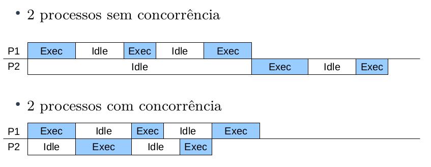

Processos
Um processo é um programa em execução acompanhado de valores de tempo de execução. É composto por:
- Código executável
- Pilha de execução contendo valores de variáveis locais
- Apontador para a pilha, um registrador da CPU que armazena em qual área de memória está a pilha
- Contador de programa, um registrador da CPU que armazena a próxima instrução a ser executada
- Valores dos registradores gerais da máquina
Note a diferença entre programas e processos: um processo envolve uma atividade, enquanto programas envolvem algoritmos, mas não a sua execução.
Para um processo, são relevantes informações sobre o ambiente, como espaço de endereçamento, arquivos abertos, processos filhos, sinais e estatísticas de uso, e sobre a execução, como o contador de programa, apontador de pilha, conjunto de registradores e estado de execução.
Os processos podem ser classificados em relação ao custo da troca de contexto e manutenção em heavyweight (processo tradicional) ou lightweight (threads). O processo heavyweight é composto tanto pelo ambiente quanto pela execução. Cada processo possui um único fluxo de controle, contador de programa, e roda de forma independente dos demais. Em um dado momento há vários processos ativos e o processador é chaveado entre eles.

Ciclo de Vida dos Processos
Criação
Processos podem ser criados:
- No início do sistema;
- Ao executar uma chamada ao sistema de criação de processo por um processo em execução;
- Por requisição do usuário;
- Início de um job de lote.
Ao iniciar o sistema operacional, diversos processos são criados, alguns executando em primeiro plano e interagindo com o usuário, outros em segundo plano, chamados de daemons. Normalmente os processos são criados por outro.

No Unix há apenas uma forma de se criar processos, por meio da clonagem (fork()). Esse comando cria um clone idêntico ao processo que o chamou, e normalmente é executado execve depois da chamada para mudar o "programa" em execução. No Windows há uma função que trata o processo de criação e carga do programa, o CreateProcess.
Término
Processos podem terminar de forma voluntária ou involuntária, com as seguintes condições de término:
- Saída normal (voluntária);
- Saída por erro (voluntária);
- Erro fatal (involuntário);
- Cancelamento por outro processo (involuntário);
Hierarquia
Quando um processo é criado por outro, eles continuam associados, e em alguns sistemas é possível listar o ppid (parent pid) de um processo.
No Unix todos os processos são filhos do init (ou systemd). O Windows não apresenta hierarquia de processos.
Estados
Quando um processo está esperando um evento, como leitura em disco, leitura de rede ou entrada do usuário, dizemos que o processo está bloqueado. Um processo pode estar:
- Rodando
- Bloqueado
- Pronto
Sistemas monoprocessados são aqueles que possuem apenas um processo rodando.

Um processo circula entre os estados conforme ilustrado, de forma que quando o processo aguarda um evento ele se bloqueia (1), quando o evento esperado ocorre, o processo torna-se pronto (2), então pode ser escolhido pelo escalonador para executar (4) e retorna para o estado de pronto quando seu tempo de posse do processador se esgota (3).
Classificação
Processos CPU Bound e I/O Bound
Processos podem ser classificados como CPU ou I/O bound:
- CPU Bound (afinidade à CPU): passam a maior parte do tempo usando a CPU, no estado rodando ou pronto.
- I/O Bound (afinidade à Entrada e Saída): passam a maior parte do tempo em estado bloqueado por causarem muitas operações de entrada e saída.
Implementação
Todas as informações sobre um processo são mantidas na tabela de processos (ou bloco de controle de processo), que pode ser acessada pelo comando ps aux. Os campos dizem respeito à gerência do processo, da memória e dos arquivos. Cada processo possui um identificador único pid (process id).
Na tabela de processos, constam as seguintes informações:
| Gerenciamento de processos | Gerenciamento de memória | Gerenciamento de arquivos |
|---|---|---|
| Registradores | Ponteiro para o segmento de dados | Diretório-raiz |
| Contador de programa | ||
| Palava de estado do programa | ||
| Ponteiro de pilha | Diretório de trabalho | |
| Estado do processo | ||
| Prioridade | Ponteiro para o segmento de pilha | |
| Parâmetros de escalonamento | Descritores de arquivos | |
| Identificador do processo(PID) | ||
| Processo pai (PPID) | ||
| Grupo do processo | Identificador do usuário | |
| Sinais | ||
| Momento em que iniciou | Ponteiro para o segmento de código | |
| Tempo de uso de CPU | Identificador do grupo | |
| Tempo de CPU do filho | ||
| Momento do próximo alarme |
A troca de contexto é a operação de salvar os registradores de um processo e restauração dos registradores de outro. A troca de contexto permite a troca do processador entre os processos e é a operação básica da multiprogramação.
Para manter a ilusão de múltiplos processos rodando sequencialmente em uma máquina com uma CPU e vários dispositivos de E/S, esses dispositivos possuem uma área da memória chamada vetor de interrupções, que contém os endereços de procedimentos dos serviços de interrupção.
Escalonamento de Processos
O Sistema Operacional é responsável por gerenciar os recursos de processamento de um computador, e essa atividade é conhecida como escalonamento de processador. Já a interação entre processos é realizada por meio de mecanismos de comunicação.
Quando múltiplos processos encontram-se no estado pronto, o escalonador do sistema operacional elege um para execução, utilizando um algoritmo de escalonamento. Este algoritmo é responsável por determinar qual processo irá rodar, e por quanto tempo poderá utilizar o processador.
Quando um processo solicita operações blocantes (E/S), sua execução fica suspensa até que o evento ocorra.
A execução concorrente provém uma melhor utilização da CPU, especialmente para processos I/O Bound.

Os escalonadores podem ser classificados em preemptivos e não-preemptivos*, sendo que a preempção é a suspensão temporária da execução de um processo.
Classificação de Escalonadores
Escalonadores Não-Preemptivos
Os escalonadores não-preemptivos permitem que um processo rode até o fim, ou até que ele mesmo se bloqueie, após a obtenção do processador. Nessa situação, nenhuma entidade externa pode "tirar a CPU à força" do processo. Esses escalonadores são fáceis de implementar, mas, em contrapartida, permitem o abuso no tempo de CPU de um determinado programa, o que viola os critérios de um bom escalonador.
Escalonadores Preemptivos
Nesse modelo de escalonamento, cada processo possui um tempo (time-slice) de posse do processador, e quando o tempo se esgota o SO retira o processador desse processo e permite que outro processo execute. Esse controle de tempo de execução é feito por interrupções.
Os processadores modernos possuem um clock que gera as interrupções a uma frequência determinada, e o SO mantém um contador (indicando o tempo máximo de permanência do processo com a CPU) que é decrementado a cada clock tick, se o contador chegar a zero, o tempo de permanência do processo terá se esgotado.
Esses escalonadores asseguram um uso mais balanceado da CPU e são utilizados na maioria dos SO modernos, mas geram complicações na programação de processos concorrentes.
Critérios de Escalonamento
Um bom escalonador deve estar atento aos critérios a seguir, embora seja impossível atingir todos:
- Justiça: todos os processos devem ter chances justas de uso do processador (não são chances iguais);
- Eficiência: o processador deve estar ocupado sempre que houver trabalho a fazer;
- Minimizar o tempo de resposta: reduzir o tempo entre a entrada de usuário e a resposta dada;
- Minimizar o turnaround: reduzir o tempo desde o lançamento do processo até seu término (soma de tempo de espera por recursos e tempo de utilização da CPU);
- Minimizar o waiting time: minimizar o tempo de espera pela CPU;
- Maximizar o throughput: maximizar o número de tarefas em uma unidade de tempo;
Algoritmos de Escalonamento
Algoritmos de Escalonamento visam dividir a utilização do processo entre processos que devem ser executados. Alguns dos algoritmos clássicos são: First Come First Served, Round-Robin, Prioridades e Shortest Job First.
First Come First Served
Round-Robin
Esse algoritmo permite que cada processo utilize o processador por um intervalo de tempo pré-definido, denominado quantum. Quando o quantum se esgota, o processador é dado a outro processo, em ordem de chegada.
Prioridades
Shortest Job First
Referências
[1] TANENBAUM, A. S. Sistemas. Operacionais Modernos. 4ª ed. Prentice Hall, 2016.